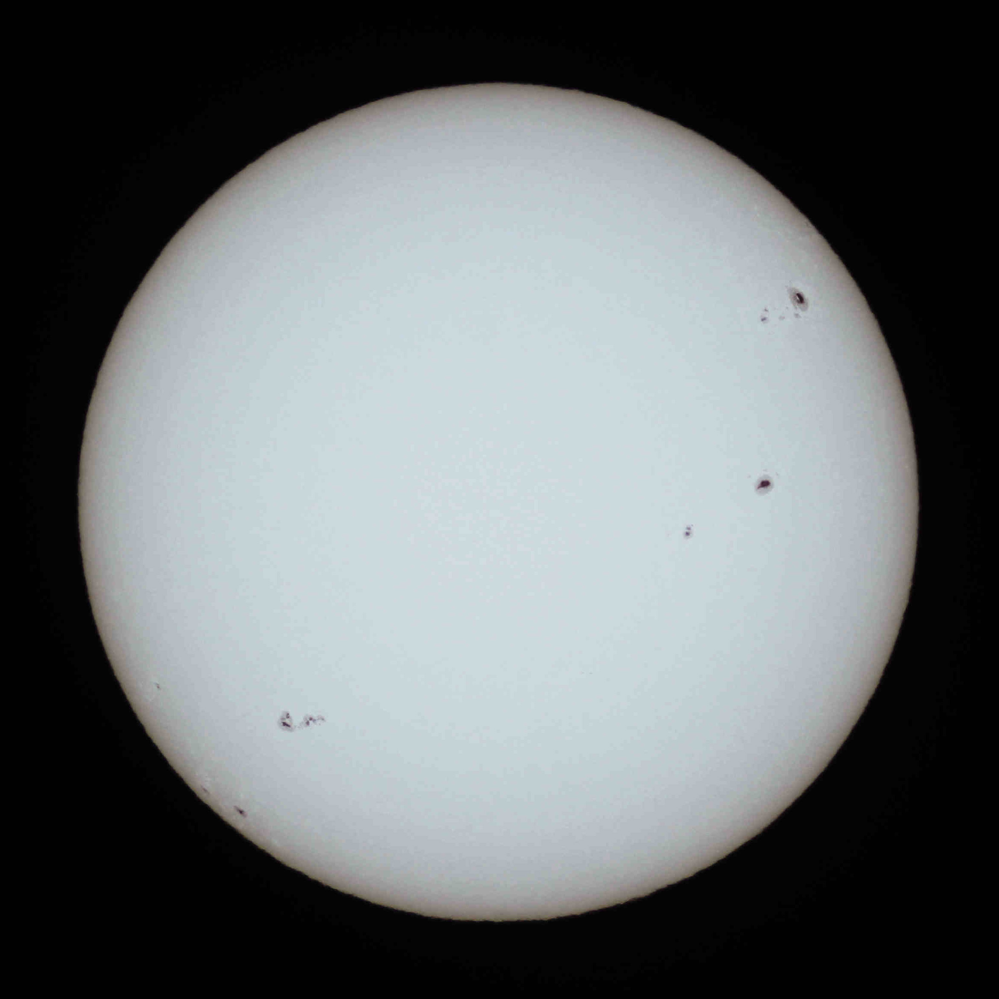
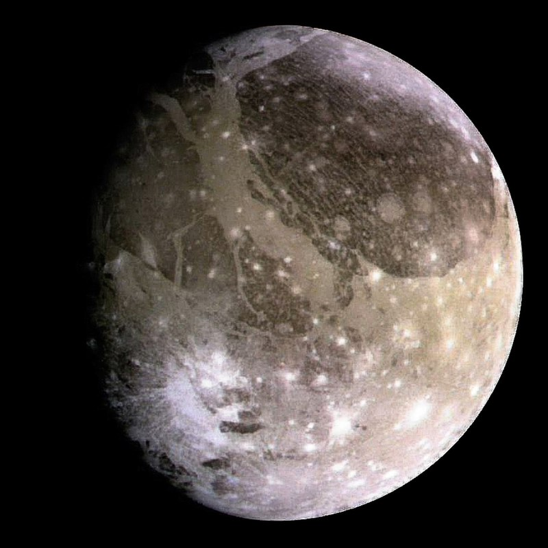

Galeries
-
étoile
C'est un corps céleste plasmatique qui rayonne sa propre lumière par réactions de fusion nucléaire, ou des corps qui ont été dans cet état à un stade de leur cycle de vie, comme les naines blanches ou les étoiles à neutrons.
-
planet

C'est un corps céleste orbitant autour du Soleil ou d'une autre étoile, possédant une masse suffisante pour que sa gravité la maintienne en équilibre hydrostatique.
-
lune
C'est un objet céleste en orbite autour d'une planète ou d'un autre objet plus grand que lui-même qui n'est pas d'origine humaine, par opposition aux satellites artificiels. Ils peuvent être de grosse taille et ressembler à de petites planètes.